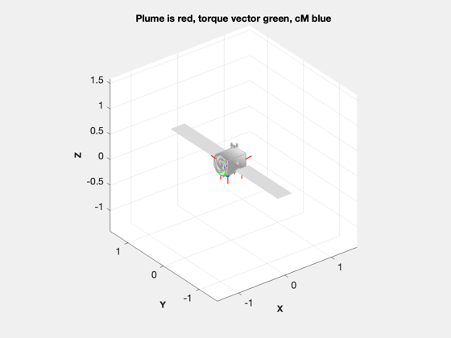

Analyze the thruster layout for the Asteroid Prospector spacecraft
Create a thruster layout and save it to a mat-file for further use. The two files saved are:
- RCS-AsteroidProspector.mat - APThrusters-Xenon.mat
The function loads AsteroidProspector.obj as the basis for the thruster layout.
See also ThrusterLayout, BDDesign, Unit
Contents
%-------------------------------------------------------------------------- % Copyright (c) 2012 Princeton Satellite Systems, Inc. % All rights reserved. %-------------------------------------------------------------------------- % Since version 2016.1 %--------------------------------------------------------------------------
One u is 10 cm
%----------------- u = 0.1; % meters zBox = 1.4*u; xBox = 3*u; yBox = 2*u; thrust = 0.5; % N g = 9.806; pressure = 350*6894; uE = 235*g; thrustCoeff = thrust/pressure; thrustIon = 1.8e-3/pressure; % N iSpBIT3 = 2460; uEBIT3 = iSpBIT3*g; xenonMass = 6; rhoXenon = 2750; % kg/m^3 fuelMass = 2; rhoFuel = 1240; % kg/m^3 tNom = 300; pI = 350*6895; pF = 100*6895; rThruster = [xBox/2 -xBox/2 -xBox/2 xBox/2 xBox/2 -xBox/2 -xBox/2 xBox/2;... yBox/2 yBox/2 -yBox/2 -yBox/2 yBox/2 yBox/2 -yBox/2 -yBox/2;... zBox zBox zBox zBox 0 0 0 0]; uThruster = Unit([-1 1 1 -1 0 0 0 0;... -1 -1 1 1 0 0 0 0;... -1 -1 -1 -1 1 1 1 1]); ThrusterLayout('initialize','AsteroidProspector.obj') ThrusterLayout('update',uThruster,rThruster); save(FileFullpath('RCS-AsteroidProspector.mat'), 'rThruster','uThruster'); [v, mP] = BDDesign( fuelMass, rhoFuel, tNom, pI, pF ); fprintf(1,'\n\n------------- Variable Data for RCS System -------------\n\n'); fprintf(1,'fuelDensity %12.4f\n', rhoFuel); fprintf(1,'fuelPressure %12.4f\n', pI); fprintf(1,'mass %12.4f\n', fuelMass); fprintf(1,'massPressurant %12.4f\n', mP); fprintf(1,'temperatureTank %12.4f\n', tNom); fprintf(1,'volumeTank %12.4f\n', v); fprintf(1,'\n\n------------- Thruster Data for RCS System Setup File -------------\n\n'); for k = 1:size(rThruster,2) fprintf(1,'[%7.2f %7.2f %7.2f %7.2f %7.2f %7.2f %7.2e %7.2f %7.5f %7.4f %7.2f]\n',... rThruster(:,k),uThruster(:,k),thrustCoeff,uE,0.02,0.001,1); end [v, mP] = BDDesign( xenonMass, rhoXenon, tNom, pI, pF ); fprintf(1,'\n\n------------- Variable Data for Xenon System -------------\n\n'); fprintf(1,'fuelDensity %12.4f\n', rhoXenon); fprintf(1,'fuelPressure %12.4f\n', pI); fprintf(1,'mass %12.4f\n', xenonMass); fprintf(1,'massPressurant %12.4f\n', mP); fprintf(1,'temperatureTank %12.4f\n', tNom); fprintf(1,'volumeTank %12.4f\n', v); rThruster = [0;0;-zBox/2]; uThruster = [0;0;1]; fprintf(1,'\n\n------------- Thruster Data for Xenon System Setup File -------------\n\n'); for k = 1:size(rThruster,2) fprintf(1,'[%7.2f %7.2f %7.2f %7.2f %7.2f %7.2f %7.2e %7.2f %7.5f %7.4f %7.2f]\n',... rThruster(:,k),uThruster(:,k),thrustIon,uEBIT3,0.02,0.001,1); end save(FileFullpath('APThrusters-Xenon.mat'), 'thrust','g','pressure',... 'uE','thrustCoeff','thrustIon','iSpBIT3','uEBIT3','xenonMass','rhoXenon',... 'fuelMass','rhoFuel','tNom','pI','pF','rThruster','uThruster'); %-------------------------------------- % PSS internal file version information %-------------------------------------- % $Id: f31c6b2d2d6b6d1c0bb176375af1adcac9a2e8cc $
ans =
[]
------------- Variable Data for RCS System -------------
fuelDensity 1240.0000
fuelPressure 2413250.0000
mass 2.0000
massPressurant 0.0025
temperatureTank 300.0000
volumeTank 0.0023
------------- Thruster Data for RCS System Setup File -------------
[ 0.15 0.10 0.14 -0.58 -0.58 -0.58 2.07e-07 2304.41 0.02000 0.0010 1.00]
[ -0.15 0.10 0.14 0.58 -0.58 -0.58 2.07e-07 2304.41 0.02000 0.0010 1.00]
[ -0.15 -0.10 0.14 0.58 0.58 -0.58 2.07e-07 2304.41 0.02000 0.0010 1.00]
[ 0.15 -0.10 0.14 -0.58 0.58 -0.58 2.07e-07 2304.41 0.02000 0.0010 1.00]
[ 0.15 0.10 0.00 0.00 0.00 1.00 2.07e-07 2304.41 0.02000 0.0010 1.00]
[ -0.15 0.10 0.00 0.00 0.00 1.00 2.07e-07 2304.41 0.02000 0.0010 1.00]
[ -0.15 -0.10 0.00 0.00 0.00 1.00 2.07e-07 2304.41 0.02000 0.0010 1.00]
[ 0.15 -0.10 0.00 0.00 0.00 1.00 2.07e-07 2304.41 0.02000 0.0010 1.00]
------------- Variable Data for Xenon System -------------
fuelDensity 2750.0000
fuelPressure 2413250.0000
mass 6.0000
massPressurant 0.0034
temperatureTank 300.0000
volumeTank 0.0031
------------- Thruster Data for Xenon System Setup File -------------
[ 0.00 0.00 -0.07 0.00 0.00 1.00 7.46e-10 24122.76 0.02000 0.0010 1.00]
